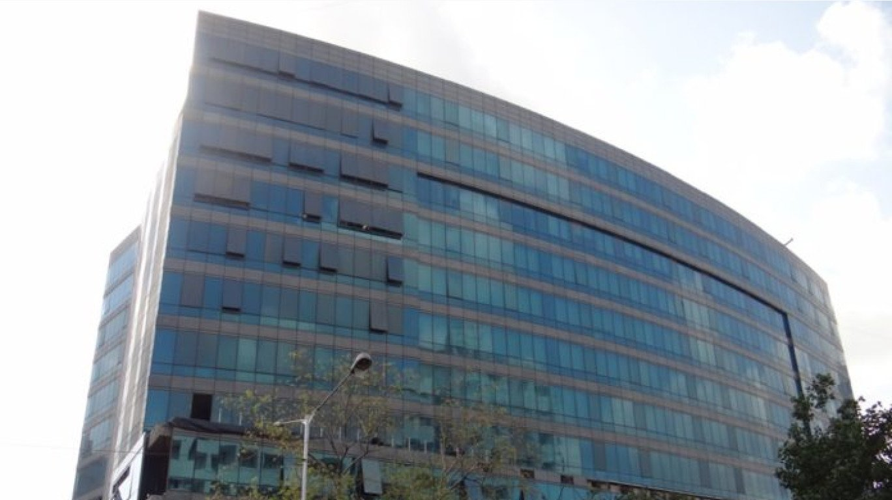
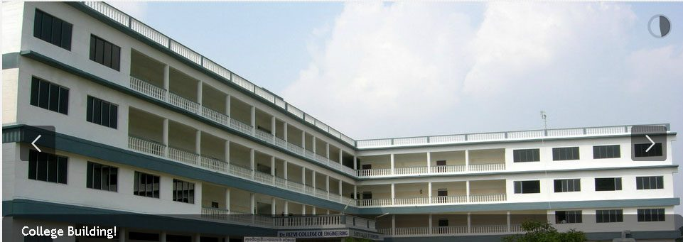
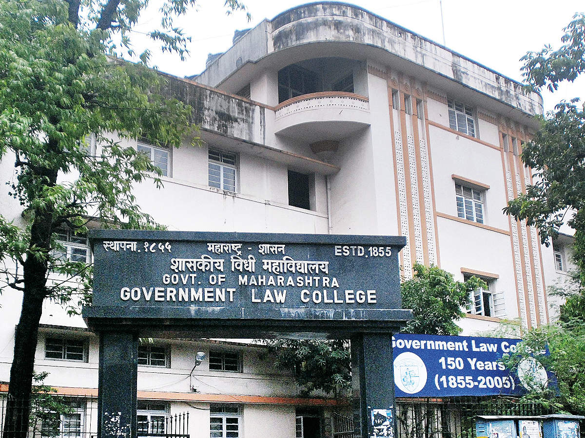
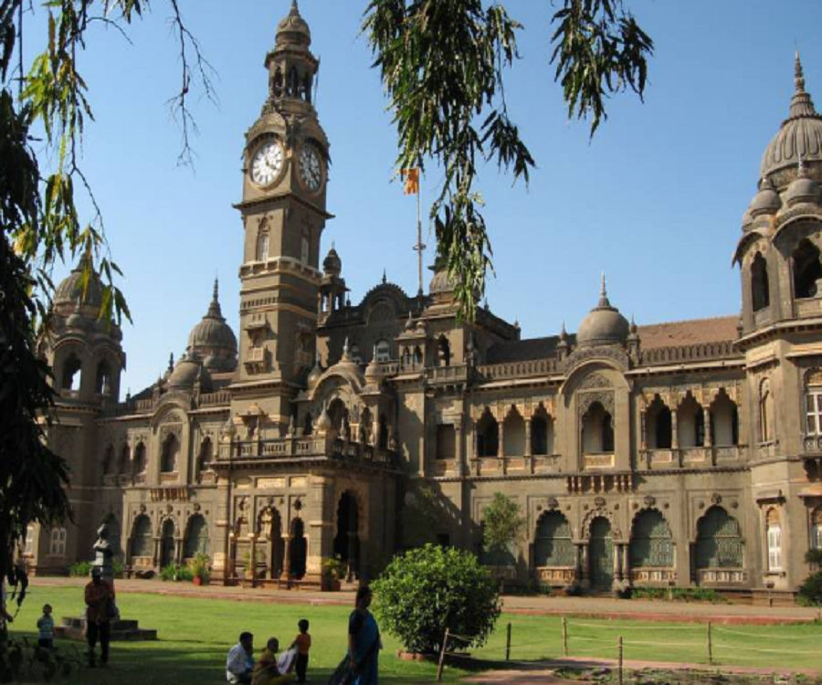

Colleges for LLB in Mumbai
Narsee Monjee Institute of Management Studies (Deemed University)
NMIMS is deemed to be a University owning 17 specialized schools, more than 17000 students, and 750 plus full-time faculty members. The College offers a vast array of PG and Doctoral programs in Management studies such as MBA, E-MBA, PGDM, PhD along with a few UG, Diploma, and PG diploma programs. Known for its MBA/PGDM program, the NMIMS Mumbai is AICTE accredited and has been ranked 22 by NIRF in 2021 in management category. NMIMS Mumbai programs are nationally and internationally accredited by NBA, NAAC, AMBA, SAQS and Bureau of Indian Standards. The Business School continues to attract applications in excess of 60,000 for a capacity of 860 MBA seats
NMIMS Mumbai offers admission to 179 Bachelor, Master, and Doctoral programs for the young go-getters. The College accepts the scores of NMIMS CET / NPAT / NMAT/CLAT-NMIMS LAT for its distinguished UG, PG, and Ph.D. programs. The institute has already initiated its placement drive for the year 2020-21 whereby the Highest CTC stood INR 38 LPA whereas the Minimum CTC stood at INR 9 LPA. Under its flagship MBA program, the college has witnessed its highest international placement package as 58.61 LPA whereas the highest domestic CTC has gone INR 38.5 LPA. The average placement CTC has been INR 18.33 LPA until now for the year 2020-21
Rizvi Law College
Rizvi Lаw Соllege is one of the best law schools in the region as it is featured among Top Law Colleges in Maharashtra. RLC offers a total of courses in law stream at undergraduate level. The most preferred course offered by RLC is LLB, admissions to which are granted on the basis of candidate’s merit in state level common entrance exam MHT CET followed by CAP counselling. Candidates applying must also be graduated from a recognized institute.
Rizvi Law College is providing its students with well-planned infrаstruсture аnd highly exрerienсed faculty in order to рrоvide quаlity eduсаtiоn to students. Оn а regulаr bаsis, guests such as judges from the Supreme Court and Bombay High Court visit the campus tо interасt with students, exрerts and faculty of the college.Government Law College
The Government Law College (GLC) is a premier law institute located in Mumbai that provides various courses at the UG and PG level in the field of law. Established in 1855, the college is affiliated to the University of Mumbai and has also been recognized by the Bar Council of India. The courses offered at the institute involve a three year or a five year LLB program, PG diploma in various specializations, and also a PG certificate program. Admission to all the courses offered is made purely based on merit and depends on the candidate's score in the CET examination for UG programs and is merit-based for PG courses. Apart from this, the institute also provides reservation seats for eligible candidates. The college has excellent facilities and is known for being the oldest law college in the entire Asian subcontinent.
Jitendra Chauhan College Of Law - [JCCL]
Jitendra Chauhan College of Law was started in 1977 under Shri Vile Parle Kelavani Mandal Charitable Trust. The College of Law offers two LL.B. Degree courses, one for two-year (LLB General) and one for three-year (LLB Degree). LL.B. (General) degree holder cannot enroll as an advocate with the Bar Council.
- Application process will be conducted by DHE, Maharashtra.
- Applicants have to apply for MAH-CET Law and then register for either online or offline counselling.
- Seats are allocated on the basis of merit of the candidate as determined by the performance in the relevant entrance examination (Maharashtra CET Law), followed by the Centralized Admission Process (CAP).
- Reservation is in accordance with regulations of the Government, with relaxation given in minimum qualifications as well.
SVKM's Pravin Gandhi College Of Law

SVKM's Pravin Gandhi College of Law, Mumbai was established in 2004. It is approved by the Bar Council of India and is affiliated to the University of Mumbai. The College offers a five-year integrated Bachelor of Legal Science & Bachelor of Legislative Law (B.L.S., LL.B) program. Admission to the college is based on scores obtained in MH CET Law exam. The law college also has a Training & Placement Cell which provides its students with employment opportunities in renowned law firms and corporate companies.